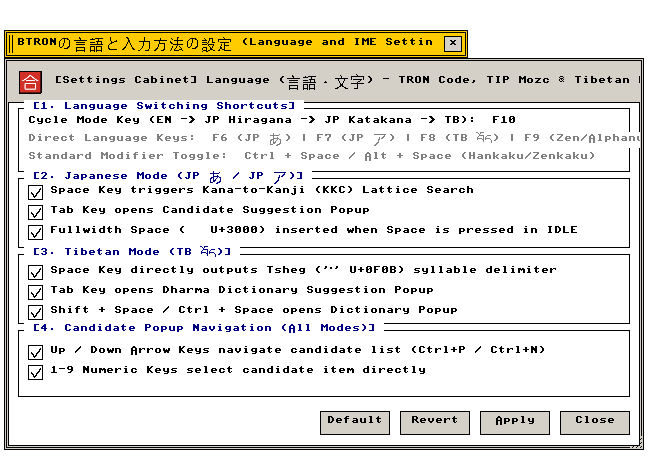

言語設定 (Language)
TIP Mozc · TRON文字コード 1〜16面 · チベット語 Wylie · ファンクションキー
TRON Input Processor (TIP)、かな漢字変換、18万字超文字プレーン、EWTS変換エンジンの設定仕様
"Architectural parameters for the TRON Input Processor, Mozc morphological engine, and 16-plane character mappings."
← 設定フォルダ (Settings Folder Index)
言語設定（Language） — TRON Input Processor (TIP)、Mozc形態素解析かな漢字変換、18万字超を収容するTRON文字コード第1〜16面、EWTSチベット語変換基盤を管理する設定アプレット。
"Multilingual input and typography subsystem: microkernel event server architecture, dictionary morphological parsing, and universal character plane dispatch."
画面プレビュー (Screen Preview)

実機描画フレームバッファより自動抽出された透過言語・文字設定ウィンドウ (Native Headless GDEV Capture)
概要 (Overview)
TRON Input Processor (TIP)、Mozc形態素解析かな漢字変換、18万字超を収容するTRON文字コード第1〜16面、EWTSチベット語変換基盤を管理する設定アプレット。
"Multilingual input and typography subsystem: microkernel event server architecture, dictionary morphological parsing, and universal character plane dispatch."
基本操作仕様 (Operational Specifications)：
・[標準 (Default)]：工場出荷時の初期設定に復元します。
・[適用 (Apply)]：設定変更を確定し、システム状態へ反映します。
・[閉じる (Close)]：設定ウィンドウを破棄します（cls_wnd()）。
1. TRON Input Processor (TIP) と Mozc かな漢字変換 (TIP Input Method Subsystem)
マイクロカーネル型インプットメソッドフレームワーク「TIP」およびMozcかな漢字変換エンジンの動作仕様。
"Microkernel event-driven input method server, Romaji-Hiragana FSM, and statistical morphological dictionary lookups."
| 設定項目・機能名 |
動作概要と視覚仕様 (Functional Specification) |
技術仕様・幾何学構造 (Technical / C99 Definition) |
TIP IFE / Event Subsystem
TIP 入力フロントエンド |
キー入力をインターセプトし、未確定文字列バッファ（TIP_CNV）とキャレット位置（TIP_CAR）を管理します。 |
システムコール: iopn_tip, iput_key
C99: g_state_language.checks[0] |
Mozc KKC Morphological Engine
Mozc かな漢字変換エンジン |
Trie木構造辞書による文節区切り・単語連結・N-gram生起確率に基づく高精度かな漢字変換。 |
辞書構造: src/tip/mozc_kkc.c
C99: g_state_language.checks[1] |
Inline Pre-Edit Buffer Tracking
インライン未確定文字列描画 |
T-Editorやターミナル等、フォーカスされたウィンドウのキャレット直下に未確定文字列を下線付きで直接描画します。 |
イベント: EV_TIP_CNV, EV_TIP_OUT
C99: g_state_language.checks[5] |
2. TRON文字コード体系とチベット語Wylie基盤 (TRON Planes & Wylie Subsystem)
16面構成のTRON多言語文字コードプレーンおよび純C99 Extended Wylieチベット語変換エンジンの設定仕様。
"16 multilingual planes accommodating 180,000+ characters, and real-time ASCII-to-Tibetan EWTS subjoining."
| 設定項目・機能名 |
動作概要と視覚仕様 (Functional Specification) |
技術仕様・幾何学構造 (Technical / C99 Definition) |
TRON Code Planes 1–16 (180,000+ Kanji)
TRON文字コード第1面〜第16面 |
JIS第1〜第4水準、GB 2312、KS C 5601、『大漢和辞典』古典漢字約5万字を無衝突で一元収容します。 |
文字面: 0x21〜0x7E 多面展開
C99: g_state_language.checks[3] |
Extended Wylie Tibetan (EWTS) Engine
チベット語 Wylie 変換基盤 |
ASCIIローマ字表記（Wylie）から縦方向に重なるチベット文字Unicode（サンスクリット真言結合対応）へリアルタイム変換。 |
変換器: src/kernel/tip/wylie.c
C99: g_state_language.checks[2] |
Transliteration Function Keys [F6–F10]
ファンクションキー直接変換 |
[F6] ひらがな, [F7] 全角カタカナ, [F8] 半角カナ, [F9] 全角英数, [F10] 半角英数/確定を即座に実行します。 |
キーコード: BTRON_KEY_F6 .. F10
C99: g_state_language.checks[4] |
3. 全設定パラメータ仕様一覧 (Configuration Parameter Specifications)
言語設定が提供するすべての設定要素、初期値、およびC99内部シンボル。
"Comprehensive parameter specification table: indexing all UI widget states, factory defaults, and underlying C99 data symbols."
| セクション |
パラメータ名 / UI要素 |
標準値 (Default) |
設定値 / 選択肢 |
C99 内部変数・シンボル |
| [1] TIP / Mozc |
TIP Event Subsystem |
有効 (TRUE) |
チェックボックス |
g_state_language.checks[0] |
| [1] TIP / Mozc |
Mozc KKC Engine |
有効 (TRUE) |
チェックボックス |
g_state_language.checks[1] |
| [1] TIP / Mozc |
Inline Pre-Edit Buffer |
有効 (TRUE) |
チェックボックス |
g_state_language.checks[5] |
| [2] 文字面・Wylie |
TRON Planes 1–16 |
有効 (TRUE) |
チェックボックス |
g_state_language.checks[3] |
| [2] 文字面・Wylie |
Tibetan Wylie Engine |
有効 (TRUE) |
チェックボックス |
g_state_language.checks[2] |
| [2] 文字面・Wylie |
Function Keys [F6–F10] |
有効 (TRUE) |
チェックボックス |
g_state_language.checks[4] |
| アクション制御 |
[ 標準 (Default) ] |
— |
初期設定へ復元 |
全フラグTRUEリセット |
| アクション制御 |
[ 適用 (Apply) ] |
— |
変更確定と再描画 |
is_dirty = FALSE, redraw_all_windows() |
| アクション制御 |
[ 閉じる (Close) ] |
— |
ウィンドウ破棄 |
cls_wnd(wnd) |
関連コンポーネント (Related Components)